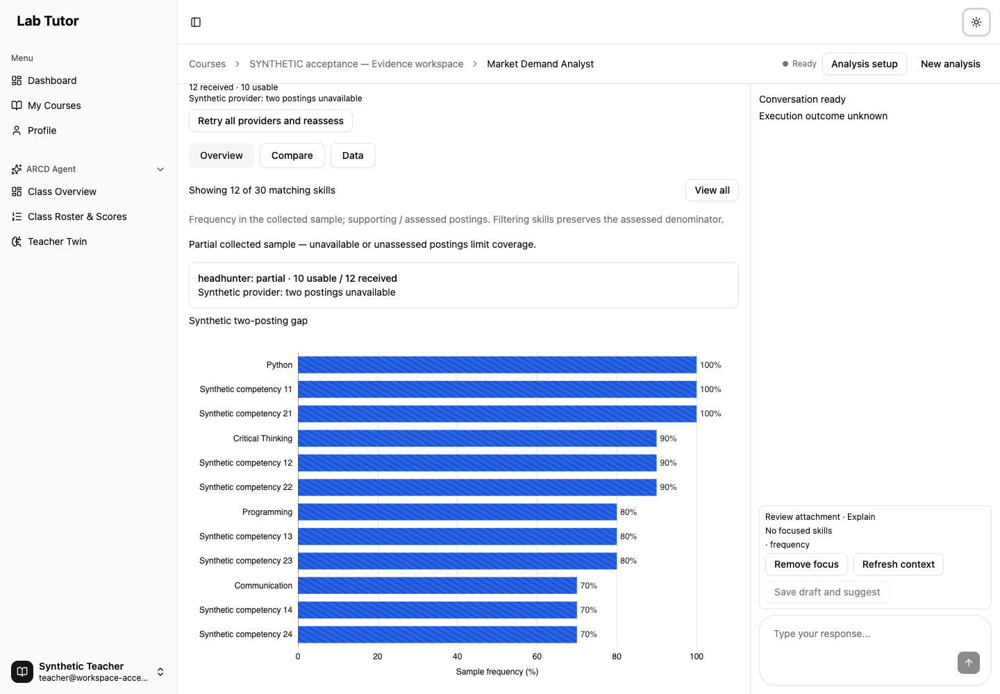
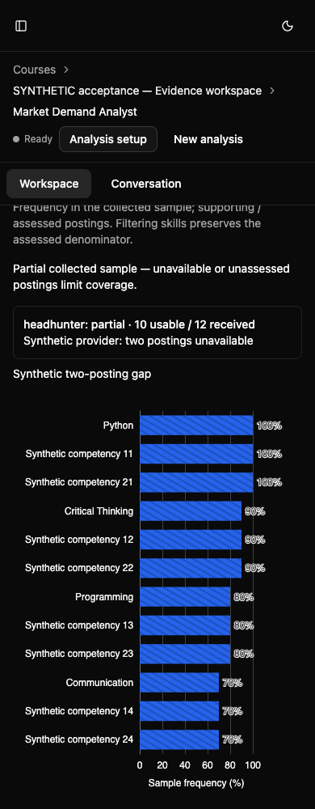
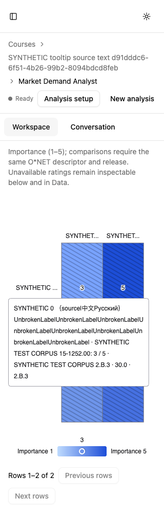
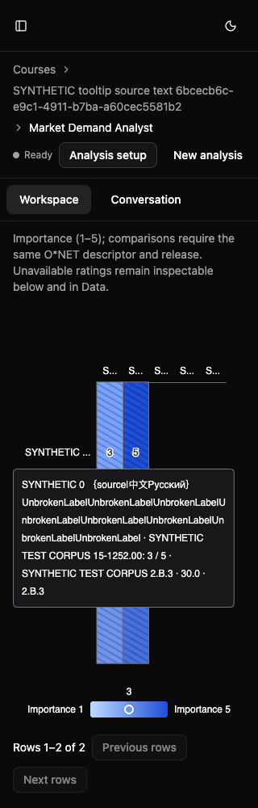
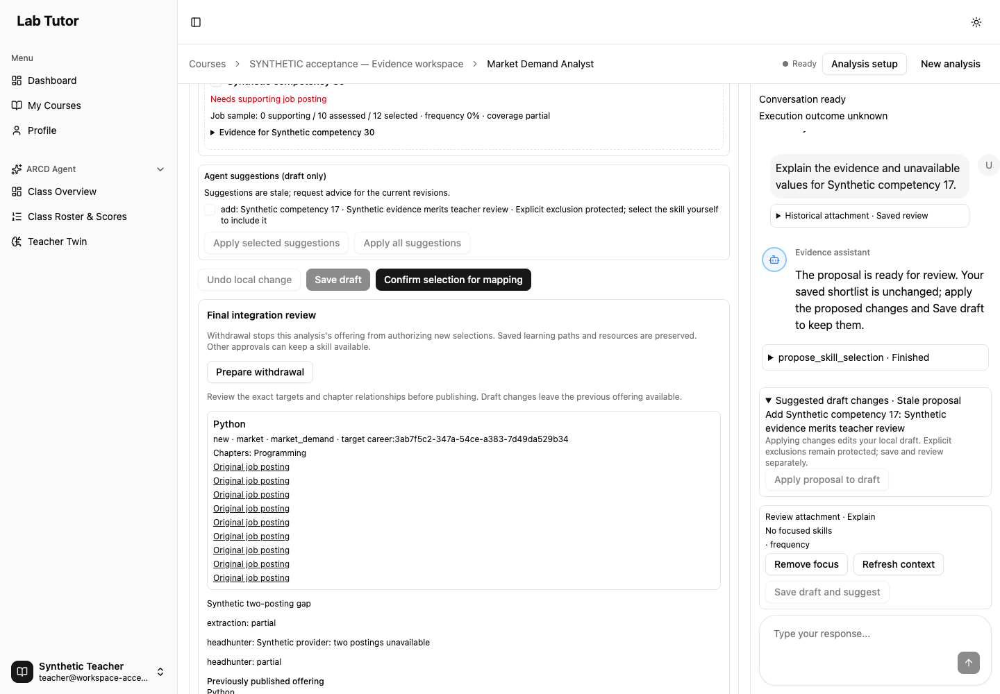
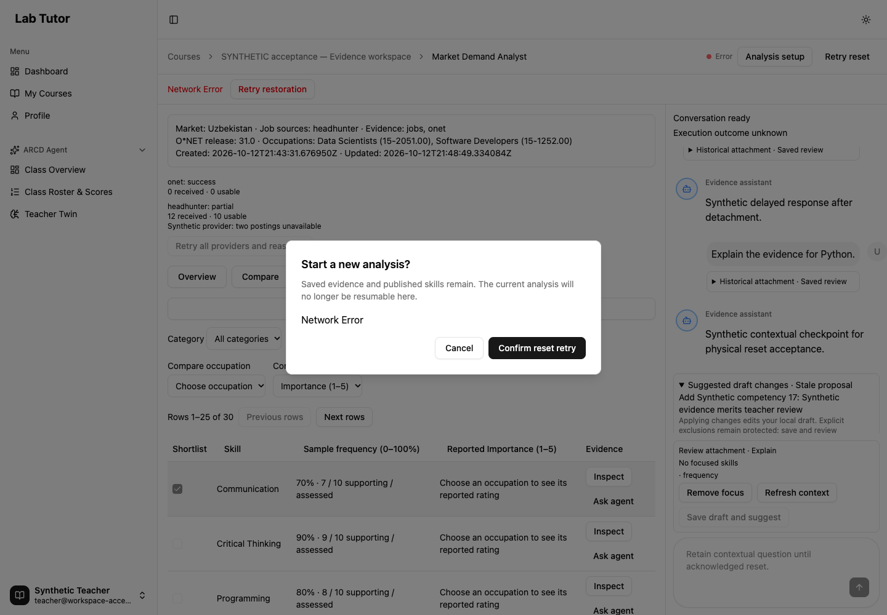
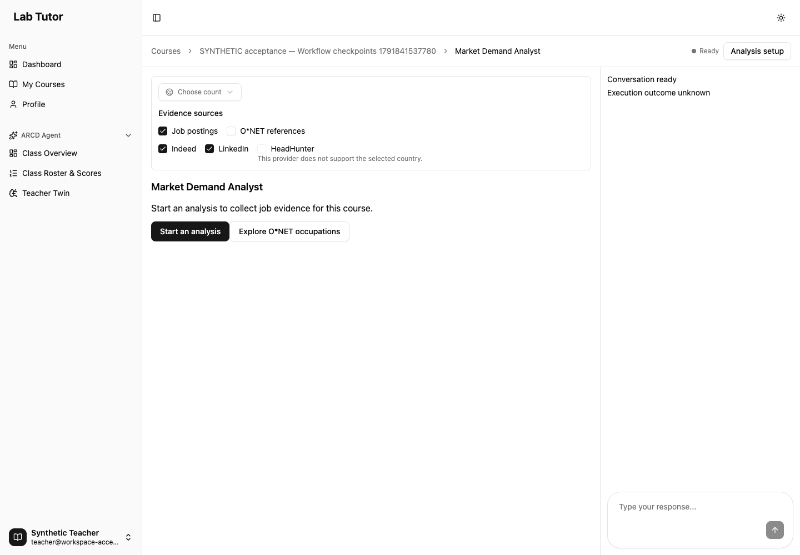
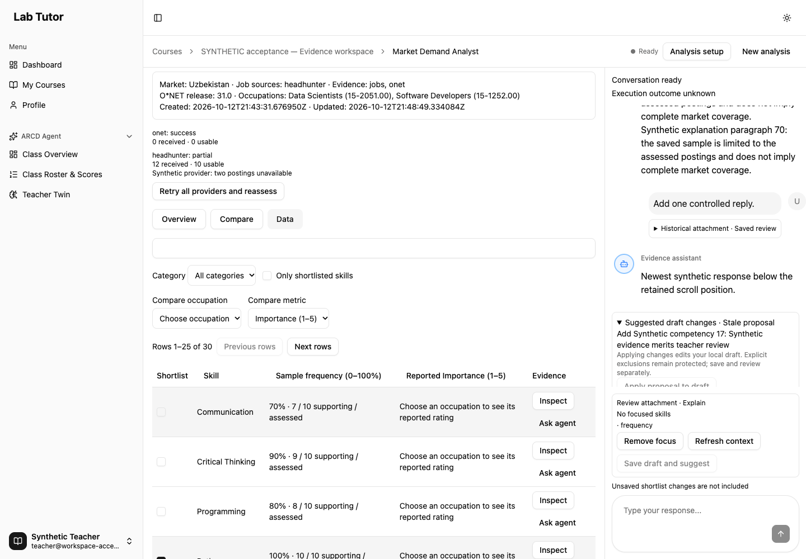
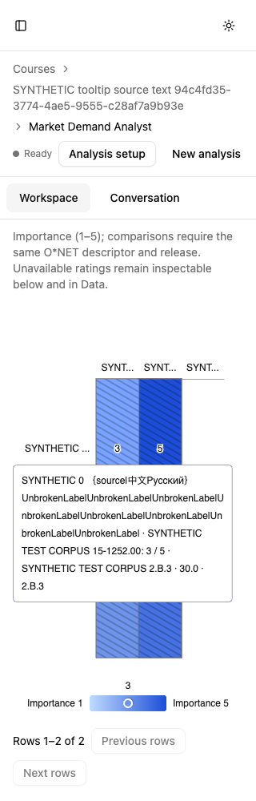
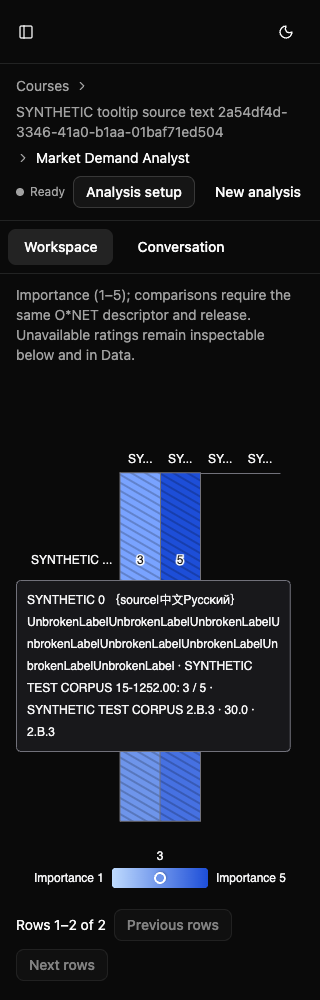

Teacher evidence workspace
Pending-composer proof limit: Historical retained-follow-up typing used auto-waiting fill and does not establish input before response EOF. The fresh final-fix gated proof asserts an enabled textarea and native keyboard input while completion remains blocked, with exactly one chat POST.
Real authentication, SQL, LangGraph tools/checkpoints, publication gates and disposable Neo4j. Synthetic records, headless browser, measured charts.
Full 16-phase browser proof HEAD d1a3660669f1ce64ef8851c2fca24c0179c1912f. Focused metadata/API/chart proof and final regression HEAD 62ab13ec792c8103b58c993b110d6184d896d2a4. Task12 commit range starts at 62ab13e; whole implementation range starts 1a720c7. The acceptance-only commit containing this report supplies the range end; its stable SHA is recorded in the coordinator handoff. Fresh Task12 and final whole-branch reviews remain coordinator gates; this report is not their approval.
Fresh lifecycle, with the interruption recorded
The original default all command exited 1 after all supplemental behavior assertions, because Architect logged a companion Axios error for intentionally disabled Azure. The exact failure is retained in the original failure record. The named continuation supplemental → provenance → reset-proof then exited 0, 0, 0 on the same fresh SQL/graph fixture. No prior-fixture approval or reset readback is counted as final proof.
The classifier requires the supplemental phase, the current course’s exact presentations URL/status 500, verified response detail Failed to list presentations: Blob service is not configured, and the exact CourseMaterialsTable.tsx companion message. Other console errors and every runtime error fail. Console evidence · Matching API detail.
Final run 36e57ea6-290f-422b-8ebd-906e57fa4c8f: 30 initial candidates, 12 selected postings with 10 assessed and two unavailable; original links and saved exclusions remain SQL-backed. Exact approval digest c7474f9233871437e7a2f0b7c45bfa016c770382680daa6eb05800f1d2ac9538, publication revision 1 and one durable approval. Both physical reset variants preserve 21 runs, 23 posting snapshots, that approval and real student path/reading/quiz results. Initial nonsecret fixture · Final durable/student proof.
Later-HEAD compatibility verification
The final backend regression originally found 5 failures: two legacy code-only occupation records lacked titles, and three tests hardcoded the old test database name. The original owner repaired these at 62ab13e and received fresh scoped approval. The old fixtures remain intact. Historical5-failure trace · Historical pause state.
At62ab13e, actual authenticated GETs on one unapproved synthetic corpus run tested missing, null and blank titles. Only the detached display title fell back to its stored code; each GET left SQL config unchanged. A finally block restored the exact original config. The normal API response equaled the recorded d1a3660 review, including release, order, identity and metrics; the live rendered heatmap matched it and browser inspection made0 mutations. The main approved review stayed equal. Current-HEAD API/SQL/chart proof · Current-HEAD screenshot.

This bounded follow-up does not claim a new full 16-phase replay or a current acceptance projection: final graph test fixtures had already cleared/reseeded that graph. Earlier approval/student readbacks are the genuine saved proof from their stated d1a3660 lifecycle.
Scenario assertions
| Requirement | Observed behavior and evidence |
|---|---|
| A1 PASS · baseline limit | Routes Market hub and direct URL reach the same course. Architect hub/direct reload works. Reading and Video retain the baseline Home redirect; those pages do not exist. Read assertion evidence ↗ |
| A2 PASS | Real and empty data Cold restoration, real SQL review, original links and genuine empty state. Separate imported O*NET 31.0 test catalog; no fallback data. Read assertion evidence ↗ |
| A3 PASS | Exact chart values Real ECharts mark click and actual rendered series match API facts. Duplicate references produce 2/10 and 20%; unavailable values remain unavailable. Read assertion evidence ↗ |
| A4 PASS | Bounded patterns 13 representative stored cases cover thresholds, ties, identity, mixed denominators, missing/suppressed/ambiguous cells, software, partial coverage and empty filtering. Shared 61-case corpus is byte-identical. Read assertion evidence ↗ |
| A5 PASS | Focus and selection Focus/filter/occupation changes make no chat or selection write. Category/individual exclusion, undo, counts and explicit save/reload pass. Read assertion evidence ↗ |
| A6 PASS | Revisions and reconciliation Dirty choices survive conflict, stale saves/proposals fail, merged/new identities stay unselected, and a held real response cannot populate another course. Read assertion evidence ↗ |
| A7 PASS | Context permissions Visible attachment matches resolved facts; explain has no mutating tools. Proposals require explicit save; foreign/stale/oversized context is rejected before inference. Read assertion evidence ↗ |
| A8 PASS | Evidence and trust Current full GET gates source content. Loaded posting → real purge → empty API → close/reopen removes old body/phrase/excerpt/offset/payload. Unicode offsets and source-permission isolation pass. Read assertion evidence ↗ |
| A9 PASS | Failure and recovery Provider error/no fallback, partial extraction, failed stream, detach/idle-unknown, busy409, physical contextual and ordinary checkpoint failures, confirmed healthy retry and durable preservation. Read assertion evidence ↗ |
| A10 PASS | Approval and student regression Real query/group tool confirmations, final missing_job_evidence422, exact approved digest/mapping and real Neo4j projection. Idempotent approval; path, reading and quiz mastery remain equal. Read assertion evidence ↗ |
| A11 PASS | Responsive and accessible 1440/1024/768/390/320px, both themes/sidebar, keyboard table, retained composer/focus/draft. Complete actual SVG tooltip facts; axes/legend inside frame and headers pairwise nonoverlapping for two through five roles. Two/five belong to the original lifecycle; three/four are a fresh scoped proof. Read assertion evidence ↗ |
| A12 PASS | Lifecycle and resilience Native ResizeObserver, hidden reopen, repeated disposal with one click handler, navigation/scroll guards. Actual ECharts and lazy comparison import failures retain usable Data and shortlist. Read assertion evidence ↗ |
Actual browser captures
All current captures below use the synthetic acceptance lifecycle. Click any image for the full capture. All five widths were exercised in both themes; screenshots supplement assertions.
















Native resize measurements · 10 original long-label hovers · 18 two-role variant checks · 18 five-role checks · Disposed instance / handler proof
Synthetic corpus provenance
The genuine small imported O*NET31.0 fixture remains distinct from the supplement. These 13 cases copy the exact reviewed shared corpus’s association, release, scale, identity, availability and metric records; SQL IDs are namespaced per case. Labels and provenance explicitly say SYNTHETIC TEST CORPUS. Numeric source fields are copied without normalization, including independent test fields such as 50% with 3/10; they are not official ratings or a claim of production O*NET coverage. A separate real duplicate-reference scenario verifies 2/10=20%.
Long-label fixtures copy max_two_no_repeated_skill; the five-role layout adds three explicitly unrated roles only. Source-token braces, Chinese/Russian text and unbroken labels are exercised by real mouse hover. Every source case, exact expected value and SQL mapping · Actual plot coordinates and canonical expected patterns.
| Reviewed case ID | Expected eligible patterns | Actual heatmap [x,y,value] |
|---|---|---|
denominator_9 | No qualifying pattern | [] |
denominator_10 | common_sample | [] |
spread_1_0_distinct_role_ids | occupation_difference | [[0, 0, 3], [1, 0, 4]] |
missing_cell | No qualifying pattern | [[0, 0, 4]] |
suppressed_numeric_not_plotted | No qualifying pattern | [[0, 0, 4]] |
ambiguous_cell | No qualifying pattern | [[1, 0, 5]] |
explicit_descriptor_choice | occupation_difference | [[0, 0, 3], [1, 0, 5]] |
tie_label_then_id | common_sample | [] |
same_denominator_only | common_sample | [] |
max_two_no_repeated_skill | common_sample, occupation_difference | [[0, 0, 3], [1, 0, 5], [0, 1, 3], [1, 1, 4]] |
filtered_empty | No qualifying pattern | [] |
partial_coverage_qualified | common_sample | [] |
software_reference_not_numeric | No qualifying pattern | [] |
Scoped review corrections: actual three and four roles
I1 resolved: 36 new physical mouse-hover checks: three/four roles × 320/390/768px × Light/Dark × demand/scatter/heatmap. Every SVG text node stayed inside all four frame edges; all six heatmaps per role count rendered exactly three or four pairwise nonoverlapping headers. Complete escaped source-token, non-ASCII and unbroken labels and metric facts remained visible. Native resize and hidden restoration used the current chart width. Browser mutations and model calls: 0; SQL-backed review stayed equal before/after.
This is a separate minimal fixture generation roles-fix-db319f5-20261013T043505Z at acceptance base db319f5695e2c6cf1b91644a01d0562df3b2cd5f; product HEAD remains62ab13e. It does not repeat or relabel the historical16-phase lifecycle or391/542 regressions. The first two roles retain the exact reviewed max_two_no_repeated_skill corpus associations/metrics. Extra roles are explicitly SYNTHETIC NO-RATING, with no numerical associations; these screenshots do not establish official O*NET coverage.
18 three-role measurements · 18 four-role measurements · Exact stored source facts · Commands, exits, generation and independent readback · M1 equality, syntax and narrow Docker Ruff




M1 resolved: corpus-browser-facts.json.expectedPatterns contains canonical expected arrays checked against the server, not DOM-observed card identities or qualifiers. The historical browser checked card count only. All13 arrays retain their exact values; the separate scatter record is unchanged. No historical observation was invented. Future runs save the actual awaited count separately as observedPatternCount.
The first scoped browser attempt exited1 at login because the fresh owned API configuration omitted its loopback CORS origin. OPTIONS preflight returned400; adding only LAB_TUTOR_CORS_ALLOW_ORIGINS=http://127.0.0.1:18773 to the private owned environment and recreating that API restored200. Product code and assertions were unchanged. Original failure trace · Login capture. Both corrected named phases exited0 (three-role log, four-role log). Browser console/runtime errors:0 (three roles, four roles); disabled-Azure and Neo4j Community startup diagnostics remain documented environment warnings. Report QA at1280/390px checks every local link/image and actual screenshot navigation. Fresh-generation ownership and cleanup receipt.

Final scoped verification
Backend: 391 passed, 90 warnings in 126.62s (0:02:06) across the prescribed 12 files. Frontend: 22 passed (22) · 542 passed (542). Whole-backend Ruff check/format, frontend lint/build and browser script syntax all exited0. The acceptance API was stopped before the serial graph-clearing pytest fixtures.
The original parallel frontend run recorded 541 passes and one 5000ms timeout (31.86s), without a failed behavioral assertion or a reported specific await. The unchanged focused file passed 7 tests in 5.14s; the timed-out test took 1258ms. One authorized rerun of the same prescribed set used --maxWorkers 1 --no-file-parallelism, with no timeout or assertion change. Its complete final result is above. This is consistent with resource contention; the original failure remains visible. Original timeout trace · Focused unchanged result.
Corpus SHA-256: f3f687d19366302180485f27ed630d752885a7e313dd5453356f0af3846941a4, both files byte-identical, 61 cases.
Exit 0 · backend12-final · 132.28s
/Applications/Docker.app/Contents/Resources/bin/docker exec --env-file /tmp/task12-regression.env lab_tutor_workspace_backend sh -lc 'cd /app && /app/.venv/bin/python -m pytest -v tests/modules/test_market_workspace_context.py tests/modules/test_market_workspace_patterns.py tests/modules/test_market_workspace_chat.py tests/modules/test_market_demand.py tests/modules/test_market_demand_thread_state.py tests/modules/test_market_skill_review.py tests/modules/test_market_skill_recommendations.py tests/modules/test_market_vacancy_evidence.py tests/modules/test_market_skill_approval.py tests/modules/test_market_skill_student_access.py tests/modules/occupation_reference/test_routes.py tests/modules/test_market_checkpoint_startup.py'Full command output
Exit 0 · backend-ruff · 0.21s
/Applications/Docker.app/Contents/Resources/bin/docker exec lab_tutor_workspace_backend sh -lc 'cd /app && /app/.venv/bin/ruff check . && /app/.venv/bin/ruff format --check .'Full command output
Exit 0 · frontend-tests · 51.28s
/Applications/Docker.app/Contents/Resources/bin/docker exec lab_tutor_workspace_frontend sh -lc 'cd /app && npm test -- --run src/features/market-demand src/test/AgentComponents.test.tsx src/App.test.tsx --maxWorkers 1 --no-file-parallelism'Full command output
Exit 0 · frontend-lint-build · 46.25s
/Applications/Docker.app/Contents/Resources/bin/docker exec lab_tutor_workspace_frontend sh -lc 'cd /app && npm run lint && npm run build'Full command output
Exit 0 · corpus-byte-parity · 0.01s
cmp backend/tests/fixtures/teacher-workspace-patterns.json frontend/src/features/market-demand/__tests__/teacher-workspace-patterns.jsonFull command output
Exit 0 · corpus-sha · 0.05s
shasum -a 256 backend/tests/fixtures/teacher-workspace-patterns.json frontend/src/features/market-demand/__tests__/teacher-workspace-patterns.jsonFull command output
Exit 0 · browser-script-syntax · 0.05s
node --check frontend/e2e/teacher-evidence-workspace.cjsFull command output
Exact commands, exit codes and durations · Isolation state before regression
Repeat the controlled acceptance
Use the existing Docker dependency images/volumes and an exclusively owned fresh database named lab_tutor_workspace_acceptance. Verify the name’s ownership before recreation; never truncate another database. Create a labeled disposable Neo4j5.26 container with the unique alias lab_tutor_market_projection_test and database neo4j. Check alias uniqueness first. Bind API/UI only to free loopback 18780/18773 and mount this checkout; never repoint original services.
The private0600 API environment supplies the dedicated SQL URL, fresh synthetic signing key and disposable graph URI/username/password/database. Run from/tmp; the harness rejects a different DB/graph hostname and disables external Azure/provider/embedding credentials. Start python -m tests.acceptance.teacher_workspace_server --port 8000 --manifest /tmp/teacher-workspace.json, wait for health and its private manifest, then run:
WORKSPACE_UI_URL=http://127.0.0.1:18773 \ WORKSPACE_API_URL=http://127.0.0.1:18780 \ WORKSPACE_FIXTURE_PATH=/tmp/task12-complete-runtime/teacher-workspace.json \ node /Users/khajievroma/.codex/skills/playwright-skill/run.js \ "$PWD/frontend/e2e/teacher-evidence-workspace.cjs"
The default sequence seeds actual student state and exact corpus cases, then executes all 16 phases serially. Model replies and controlled failure switches travel only through the private harness CLI; there are no product fixture endpoints. A failure stops the sequence. The final regression env must point to lab_tutor_workspace_test and the owned graph with all four MARKET_SKILL_TEST_NEO4J_* variables. Stop the acceptance API before regression. Private environment and manifest files are intentionally absent after cleanup.
Limits, warnings and cleanup
A1 baseline limitation: Reading and Video card destinations still redirect to Home because those page routes were already absent at baseline1a720c7. Market and Architect hub/direct routes were exercised; this is not a claim that all four workspaces function.
LLM inference and HeadHunter transport are deterministic external doubles. Azure and embedding calls are disabled. Authentication, real business queries, graph/tool execution, SQL checkpointer, approval gate, Neo4j projection and student repositories remain real. This is no live-provider, production-data, visual-assistive-technology or production-load certification.
Expected injected console events include409/422 gates, the deliberate reset500/CORS failure, aborted status/import requests, the comparison error boundary and the precisely bound Azure companion log. Unexpected runtime errors: 0. Existing Azure-disabled, Neo4j Community node-key and CALL-subquery deprecation messages are retained as environment warnings. Historical failed-regression logs also contain asyncpg MissingGreenlet connection-close teardown diagnostics. A passing captured-log run does not establish that those messages disappeared. The final backend result retains 90 LangGraph deprecation warnings across five call sites. This count is not claimed to be entirely pre-existing. Vite also reported existing minified chunks above 500kB (main bundle approximately 2.01MB); build completed in 14.15s. Frontend test traces contained no React warning output. Complete linked outputs retain all diagnostics; no failed assertion is discarded.
Only the three labeled Task12 acceptance containers, their dedicated SQL database, their graph’s owned anonymous data/log volumes and the worker’s private/temp files were removed. Original and scoped app containers, shared dependency volumes, worktree and workspace_test database were preserved. No trigger, lease or browser runner remains. Verified cleanup inventory. The first receipt formatter failed after successful cleanup because host Python lacks datetime.UTC; using timezone.utc and independently rechecking absence/preservation completed the receipt without repeating deletion.
Historical failures and owner repairs
Acceptance found and paused for five product defects. Their original owners repaired them and received fresh scoped reviews before continuation: cold checkpoint initialization, stale purged content, partial-reset recovery, long tooltip clipping, and comparison axis/legend/header layout. These are historical, not current lifecycle evidence.
Cold restorationStale purged contentPartial resetLong tooltipHeatmap layoutBounded geometry failures


Harness-only failures are recorded in the internal raw log: native details timing, unique fixture names, exact accessible tab name with unread badge, post-reflow mouse coordinates and the Azure companion classifier. An earlier exposed synthetic bearer was redacted and invalidated by rotating only fixture auth. Public artifacts contain no credentials, private manifests or browser storage.
Acceptance-only files: backend fixture harness, headless e2e script, this report and nonsecret evidence. No product files changed by Task12.